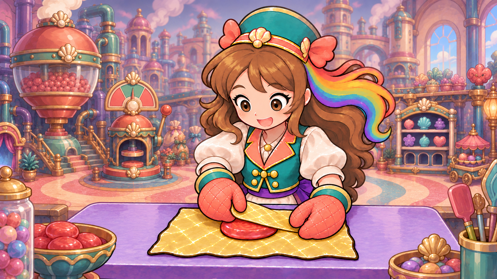

Attempt 1 · 4.2/5 source
REJECTED_ADDED_FOREGROUND_SWEETS_AND_TOOL_CLUTTER

| Individual item | Score | Written evaluation |
|---|---|---|
| Character/costume and painted identity | 4.5/5 | Same teal shell cap, coral bows, brown/rainbow hair, face and waistcoat remain recognizable in a complete painted scene. |
| Exactly two connected owned mittens | 4.5/5 | Both coral quilted mittens visibly connect through bent sleeves to Roshan; no outside human arm is present in this starting still. |
| Partial-fold grasp and attached gold sheet | 4.5/5 | The left mitten holds the lower flap edge over the same supported red oval; the right braces the near/right paper. This is a partial starting state, not closure. |
| Same supported foreground task | 4.5/5 | One central red sweet rests on the gold sheet and lavender worktop; the central work relationship is legible. |
| Attention to the task | 4.5/5 | The head and large eyes incline toward the foreground work area; a continuous attention beat remains unproved. |
| Foreground clutter and target singularity | 3.8/5 | New left jar/red-sweet bowl and right candy bowl/utensil pot compete with the intended one working sweet. They violate the requested clean foreground. |
| Room/table context and material | 4.4/5 | The established candy-factory painting supplies natural room context, but bright machinery and newly added foreground clusters compete with contact. |
| Whole contextual starting source | 4.2/5 | Rejected for added foreground props and competing sweets. Exact two-hand source topology cannot average away the scene hierarchy failure. No local motion admitted yet. |
Exact generation prompt and source provenance
Use case: compositing / illustration-story Create ONE new complete flattened painted2D storybook scene, landscape16:9, for a local hand-action reference study. Image1 is the exact established Candy Maker character, costume, two coral quilted oven mittens, lavender worktop, red oval sweet and attached crinkled GOLD PAPER design. Image2 is the existing candy-factory room appearance. Preserve their identity and painted style; this is a clean scene with no game HUD. Place the same complete waist-up Roshan naturally behind the same broad lavender worktop, large and clearly visible in the foreground of the existing pastel candy factory. Her whole head, hat, brown hair/rainbow ribbon, face, sleeves and BOTH arms/hands must be visible. Exactly two coral oven mittens, both continuously connected to her own bent forearms; no other person, external hand or bare human fingers. Her eyes attend to the gold flap and supported sweet. Preserve the useful PARTIAL-FOLD starting action: one red oval sweet rests at the center of the same gold sheet on the worktop. The gold far flap is attached to that same underlying sheet and already lies across the upper part of the sweet, leaving a clear red crescent at the front. Her screen-left mitten visibly grasps the free lower edge of this attached flap between its palm and thumb, directly over the sweet. Her screen-right mitten braces the near/right side of the sweet and paper on the table. The gold flap is NOT yet fully closed; do not tie necks or twist ends yet. Show the paper, hand contact and remaining red crescent clearly at useful large foreground scale. Use the existing room’s painted pastel aqua, lavender and coral architecture behind her, with its established rounded machines/shell trim. Keep distant details quieter than her face/hands/one working sweet. Her table sits naturally in this room; no neutral white field, poster, page, frame or artist drawing the character. Locked ordinary three-quarter table-work view, not a camera looking at a printed illustration. Broad painted satin value bands, clean plum contours, rounded child-readable shapes, restrained gold paper creases; no photorealism, realistic3D, PBR noise, vector-flat placeholders or white sticker rim. Return the entire landscape scene with full character head/arms/worktop and generous clear margins. No labels/text/UI, no additional foreground sweet, duplicate arm/glove, magic particle effect or detached prop. This is one new complete starting still, not animation or runtime/owner acceptance.
3680de66895f315edc89b569534e3a94bf9d3c66b9ef2b79aa028ee5c5c425f5
Source record · Direct review